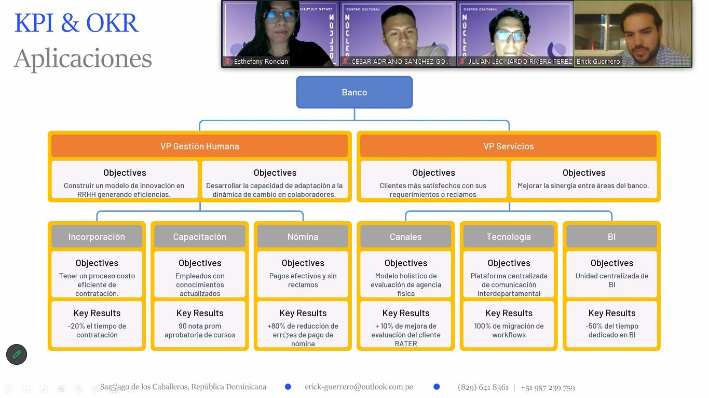
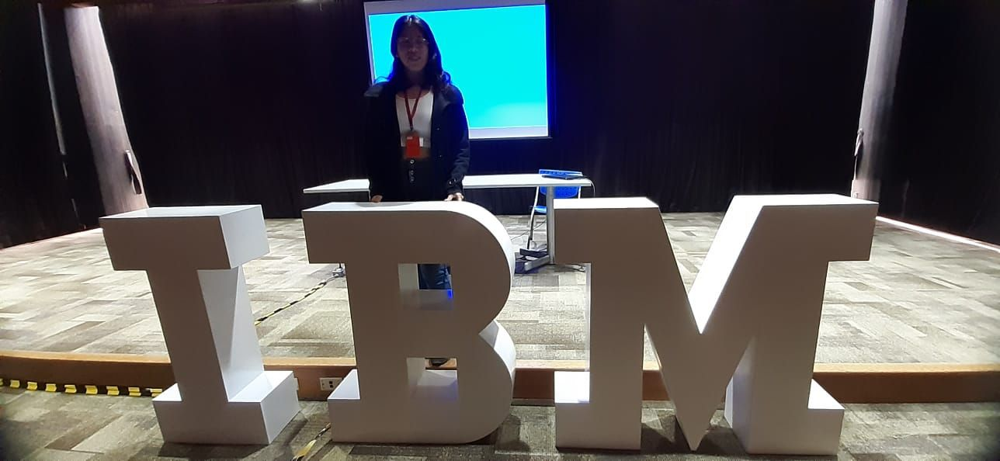
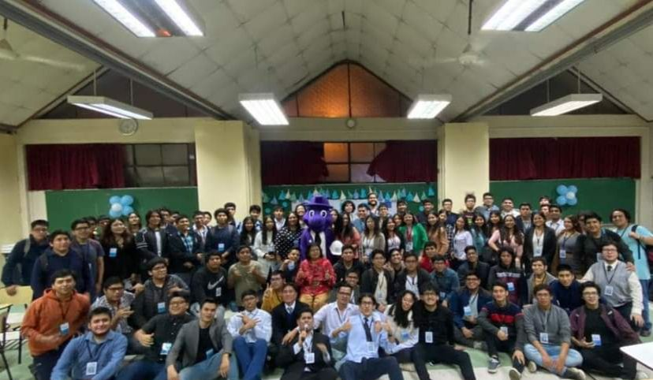
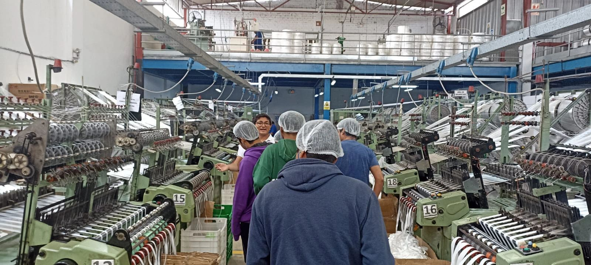
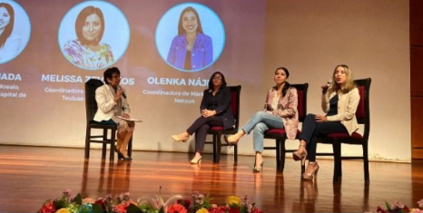
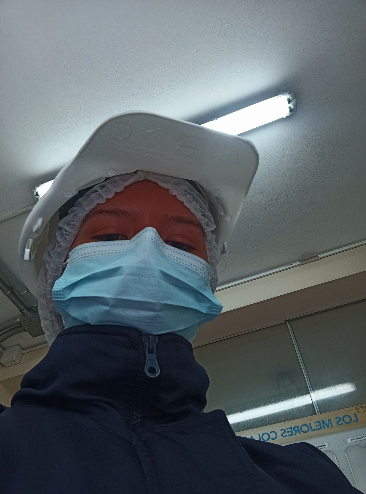
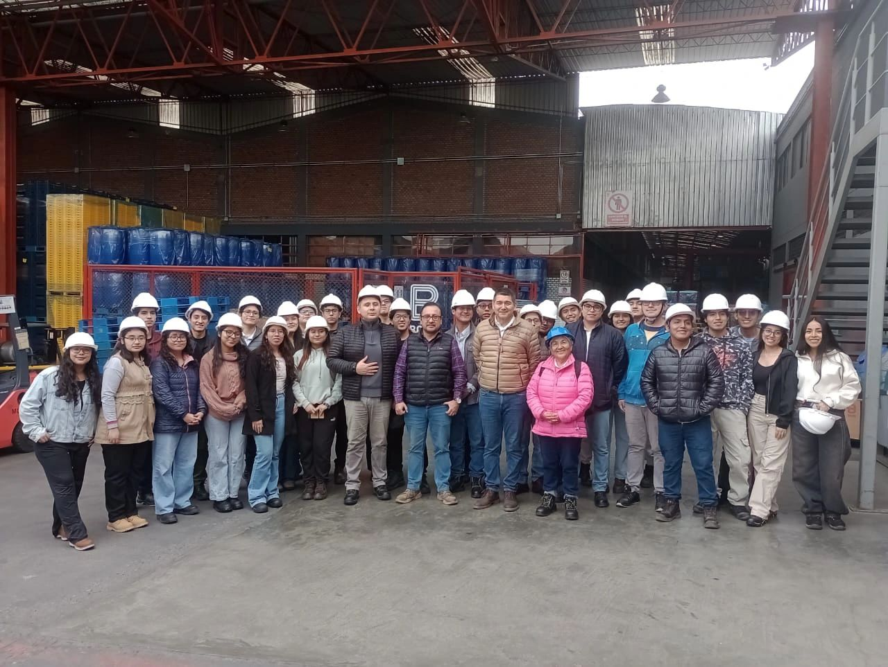
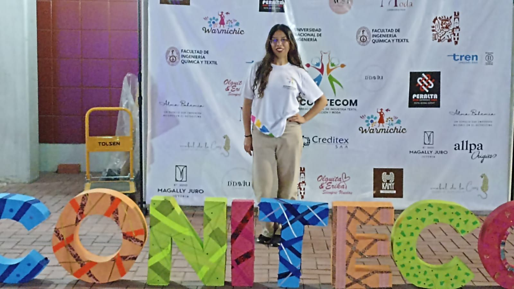

Stack & Herramientas Técnicas
Proyectos & Casos de Impacto

Indicadores de Gestión de Proyectos (KPIs & OKRs)
Diseño y gestión integral del webinar especializado para conectar a estudiantes de la FIIS-UNI con la gestión de proyectos corporativos junto al Ing. Erick Guerrero Camacho.
- Transferencia de Conocimiento: Capacitación práctica en diseño e implementación de KPIs y OKRs corporativos.
- Desarrollo de Talento: Entrega de becas de especialización para asistentes destacados.
- Gestión de Redes: Networking estratégico entre alumnos y consultores del sector tecnológico.
- Liderazgo: Coordinación ejecutiva de un equipo organizador para la ejecución exitosa del evento.

Visita Técnica Tecnológica: IBM Perú
Inmersión corporativa en las instalaciones de IBM orientada al análisis de soluciones enterprise, transformación digital y entornos de trabajo de alto rendimiento.
- Especialización & Roles: Análisis directo con líderes de industria sobre articulación de perfiles técnicos y de gestión.
- Transformación Digital: Evaluación de líneas de solución para optimizar procesos enterprise.
- Visión Estratégica: Integración de la ingeniería industrial en la industria TI y consultoría.

CoNET 2023: Encuentro de Networking
Planificación y ejecución del evento institucional diseñado para fomentar el networking entre estudiantes de la UNI y profesionales del sector corporativo.
- Control de Tiempos: Aplicación de Diagramas de Gantt para el seguimiento estricto del cronograma.
- Logística & Operativa: Coordinación integral de recursos, espacios y dinámicas interactivas.
- Moderación: Conducción de ponencias y facilitación de relacionamiento de alto valor.
- Fortalecimiento Institucional: Consolidación de un espacio recurrente de vinculación laboral.

Visita Técnica Organizacional: Fábrica Marsar S.R.L.
Planificación y dirección logística de la visita a planta orientada a la observación de procesos productivos industriales, automatización y cultura organizacional.
- Gestión Integral: Coordinación de permisos, transporte, agenda y relación directa con gerencia de planta.
- Análisis en Planta: Observación de líneas de producción y puntos de control de calidad operacional.
- Gestión del Cambio: Análisis de prevención de errores (Poka-Yoke conceptual) e incentivos de personal.
- Cultura Organizacional: Estrategias para fomentar la visibilidad de errores como insumo Kaizen.

Congreso de Desarrollo Emprendedor (CODE 2023)
Organización integral del congreso institucional de la FIIS UNI que reunió a más de 200 asistentes para promover la innovación y el liderazgo emprendedor.
- Moderación Ejecutiva: Conducción oficial de ponencias y facilitación de diálogo entre ponentes y audiencia.
- Coordinación de Ponencias: Gestión directa con ponentes e invitados de la industria.
- Gestión Logística: Control operativo de distribución de kits y merchandise para +200 asistentes.

Leyton Ingenieros
Levantamiento de información en campo y análisis operativo para empresas cliente, evaluando la interacción entre procesos y eficiencia del trabajo.
- Diagnóstico en Planta: Identificación de cuellos de botella mediante visitas técnicas y entrevistas.
- Mapeo de Procesos: Alineación de la capacidad operativa con puestos críticos y talento.
- Automatización VBA: Desarrollo de macro que redujo 2h de trabajo manual por informe en 6 empresas.

Visita Técnica Industrial: Planta BASA
Análisis operativo en la planta de Plásticos Panamericanos enfocado en evaluación logística, layout y filosofía Lean Manufacturing.
- Gestión Visual: Tableros de indicadores en tiempo real ("Fábrica que Habla").
- Herramientas Lean: Análisis práctico de SMED, producción celular y cultura Kaizen.
- Automatización: Evaluación del impacto de cobots en la eficiencia logística.

Programa de Desarrollo Integral: Academia Samay
Programa corporativo de formación para potenciar el alto rendimiento, la gestión estratégica del tiempo y el equilibrio de salud y productividad.
- Gestión del Tiempo: Administración estratégica de recursos limitados en entornos de alta demanda.
- Resiliencia: Autorregulación emocional y bienestar para el desempeño sostenible.
- Desarrollo Profesional: Alineación de propósito de carrera y liderazgo personal.

Campaña de Employer Branding
Diseño y creación de contenido digital para difundir la propuesta de valor del empleado (EVP) y programas para talento joven corporativo.
- Difusión EVP: Visibilidad de cultura corporativa y oportunidades de crecimiento.
- Posicionamiento: Comunicación de reconocimientos del ranking BIE 2025 para practicantes.
- Trabajo Multidisciplinario: Colaboración directa con la gestión del talento.

Jornada de Voluntariado: I.E. Los Reyes Católicos
Jornada de acondicionamiento de infraestructura escolar en Chorrillos para mejorar los espacios de aprendizaje comunitarios.
- Infraestructura Escolar: Mantenimiento y pintura para optimizar aulas y espacios.
- Impacto Social: Soporte a los objetivos de sostenibilidad institucionales.
- Trabajo en Equipo: Coordinación eficiente con voluntarios de diversas áreas.

Congreso Nacional CONITECOM
Difusión y soporte operativo para el Congreso Nacional de Industria Textil, Confección y Moda organizado en la UNI.
- Marketing Digital: Creación de piezas gráficas y reels promocionales de alto alcance.
- Soporte Logístico: Coordinación en día central durante ponencias y pasarela.
- Atención a Stakeholders: Gestión directa de ponentes y expositores del sector.

Voluntariado Corporativo: Valle 2000
Jornada de intervención comunitaria para el desarrollo de infraestructura básica e instalación de techos y estructuras habitacionales.
- Ejecución en Campo: Armado de estructuras, techos y pintura en plazos reducidos.
- Mejora Habitacional: Adecuación de espacios seguros para familias vulnerables.
- Enfoque de Propósito: Alineación con los objetivos de Responsabilidad Social.